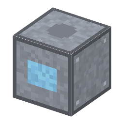

説明
①子ども アンモニア水と塩酸に過酸化水素をまぜた2つの液で、ウェハーの汚れを落とす台。今の工場の洗い方の基本。
②学生 電気 1.5kW（液を約75℃に温める）。加工中のウェハー1〜8枚＋アンモニア水1＋塩酸1＋過酸化水素2＋脱イオン水か超純水1（空の瓶は上に戻る）→ 汚れが0のウェハー（40秒）。レジストが付いていると洗えない。
③大人 SC-1（アンモニア水:過酸化水素:水＝1:1:5、約75℃）は表面をほんの少し酸化しては溶かし、有機物の汚れと小さなごみを持ち上げて落とす。SC-2（塩酸:過酸化水素:水＝1:1:6）は鉄・ナトリウムなどの金属を溶かして取る。間ごとに脱イオン水ですすぐ。
④ガチ 1965年、RCA のヴェルナー・カーンがまとめ、1970年に発表した。50年以上たった今も、最先端の工場の洗浄の基本になっている。ゲームでは、段階1（硝酸・フッ酸）は汚れが1残り（金属）、RCA は0まで落とせる。
作り方
使い道
（このアイテムを使うレシピは無い）